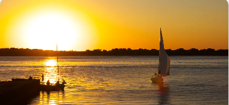

.png)

Porto Alegre
Buscar preços
Goiânia
Buscar preços
Vitória da Conquista
Buscar preços
Londrina
Buscar preços
Rio de Janeiro
Buscar preços

Período Colonial e Independência (1500-1822) A história do Brasil começa em 1500, quando o navegador português Pedro Álvares Cabral chegou às costas brasileiras. Durante o período colonial, o Brasil foi uma colônia de exploração, com a produção de açúcar sendo a principal atividade econômica, utilizando mão-de-obra escrava africana. Em 1822, o príncipe herdeiro Dom Pedro proclamou a independência do Brasil, tornando-o um império com Dom Pedro I como imperador.
Período Imperial e República Velha (1822-1930) O Brasil imperial enfrentou conflitos políticos e sociais, incluindo a Guerra do Paraguai e a abolição da escravidão em 1888. Em 1889, um golpe militar instaurou a República, marcando o início da República Velha. Esse período foi caracterizado pelo domínio político das elites cafeicultoras, com uma economia centrada na produção de café e uma política de "café com leite" entre São Paulo e Minas Gerais.

Era Vargas, Ditadura Militar e Redemocratização (1930-Presente) A Era Vargas (1930-1945) foi marcada pelas reformas sociais e econômicas implementadas pelo presidente Getúlio Vargas. Após um breve período democrático, o Brasil passou por uma ditadura militar de 1964 a 1985, caracterizada por repressão política. A redemocratização começou nos anos 1980, culminando na promulgação da Constituição de 1988. Desde então, o Brasil experimentou avanços sociais, mas também enfrentou desafios econômicos e políticos, incluindo problemas de corrupção e instabilidade política.
Buscar preços
Buscar preços
Buscar preços
Buscar preços
Buscar preços
O Brasil é um dos países mais criminalizados do mundo , portanto, não é a escolha mais segura. Deve-se tomar
cuidado nas ruas das grandes cidades, e à noite. Desconfie de batedores de carteira e roubos de bolsa e
mantenha seus objetos de valor com segurança ao seu lado. Nunca carregue todo o seu dinheiro em um só lugar
ou deixe seus objetos de valor à vista de todos no carro ou na praia ao nadar.
Então, não se pode subestimar os riscos. Sua experiência pode ser muito positiva tanto quanto muito negativa
caso presencie um assalto.
Existem algumas ameaças naturais no Brasil, como insetos perigosos e doenças que eles carregam, e correntes
de maré. É por isso que é importante nunca nadar sozinho.
Viajar para o Brasil é geralmente seguro para mulheres sozinhas, mas lembre-se de que você deve caminhar
sempre acompanhada, nunca sozinha. Tenha cuidado especial no Nordeste e na área remota da Amazônia. Fique
longe de ruas, áreas mal iluminadas e desertas e de pessoas visivelmente alcoolizadas ou sob a influência.
°C
Para viagens acessivéis pelo Brasil acesse:
Conheça outros pontos turísticos do Brasil acessando
skyscanner.com.br/© 2023 Latila Tourism